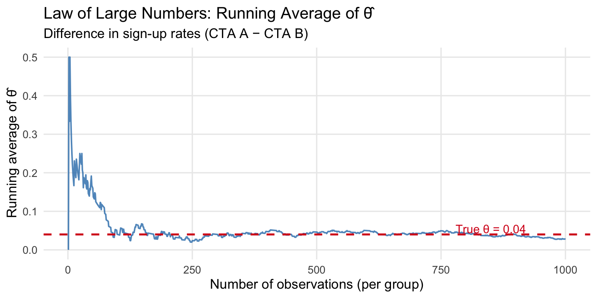
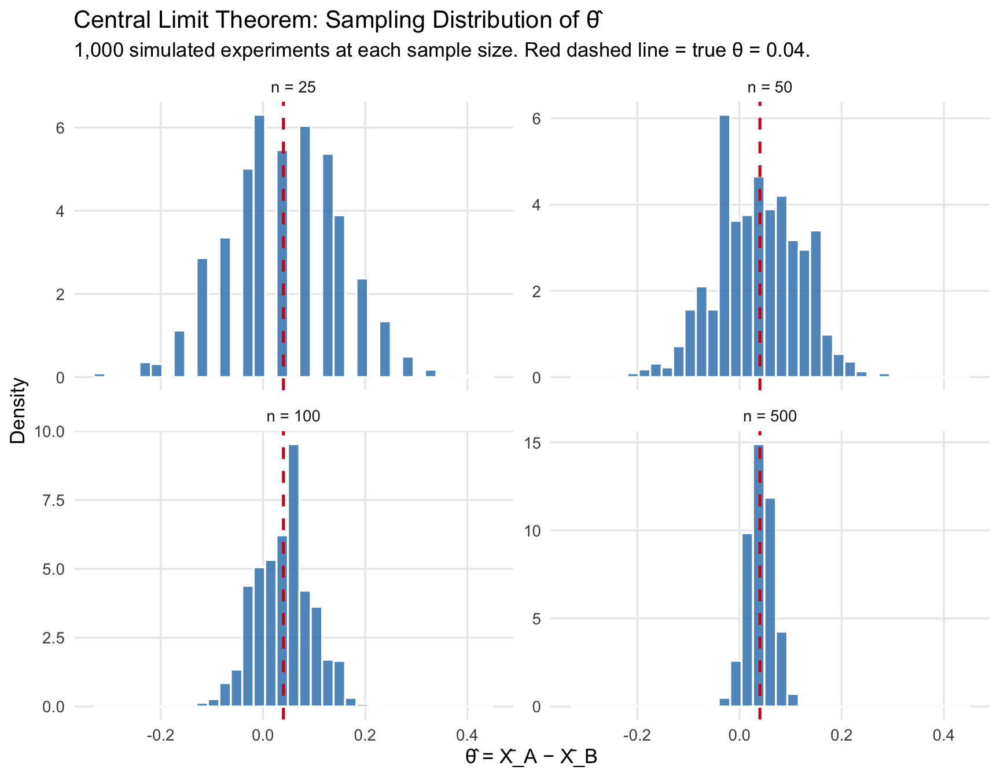

Simulating Key Ideas from Classical Frequentist Statistics
Statistics
A/B Testing
Simulation
MGTA 495
Author
Yinkai Niu
Published
April 29, 2026
Introduction
Imagine you run a website with a newsletter sign-up form on the landing page. You have two possible calls to action (CTAs) and you want to know which one persuades more visitors to subscribe:
CTA A: “Sign up for our newsletter here!”
CTA B: “Stay up to date by signing up!”
To find out which performs better, we run an A/B test. Each visitor who arrives at the page is randomly assigned to see one of the two CTAs — half see version A, half see version B. We then compare the sign-up rates between the two groups. Because assignment is random, any difference in outcomes can be attributed to the CTA itself rather than to who happened to visit. This makes the A/B test a clean, causal experiment.
In this post, we walk through the full statistical machinery behind an A/B test: how to model the data, why our estimator works (Law of Large Numbers), how to quantify uncertainty (Bootstrap), why normal-based inference is valid (Central Limit Theorem), how to perform a formal hypothesis test, and what can go wrong if we peek at results too early.
The A/B Test as a Statistical Problem
Each visitor either signs up (outcome = 1) or does not (outcome = 0). This binary outcome is naturally modeled as a draw from a Bernoulli distribution:
where \(\pi_A\) and \(\pi_B\) are the true (unknown) sign-up probabilities for each CTA. Because the CTA a visitor sees may influence their probability of signing up, we allow these parameters to differ across groups.
The quantity we care about is the difference in sign-up rates:
\[\theta = \pi_A - \pi_B\]
Since we cannot observe \(\pi_A\) or \(\pi_B\) directly, we estimate \(\theta\) using the difference in sample proportions:
where \(\bar{X}_A\) is the fraction of CTA-A visitors who signed up (and similarly for \(\bar{X}_B\)). Since each observation is 0 or 1, the sample mean is simply the proportion who signed up. The rest of this post explores why this estimator works, how precise it is, and when it can mislead us.
Simulating Data
In a real A/B test we would not know the true values of \(\pi_A\) and \(\pi_B\) — that is the whole point of running the experiment. For this exercise, however, we set the true values ourselves so we can study how well our estimator behaves when we know the ground truth.
We set \(\pi_A = 0.22\) and \(\pi_B = 0.18\), giving a true difference of \(\theta = 0.04\). We simulate 1,000 independent visitors assigned to each CTA (2,000 total).
Our single-sample estimate of \(\theta\) is already close to the true value of 0.04. But how reliable is this estimate? The sections below explore that question.
The Law of Large Numbers
The Law of Large Numbers (LLN) states that as the sample size grows, the sample mean converges to the true population mean. Applied to our setting: as we collect more visitors, \(\hat{\pi}_A\) converges to \(\pi_A\) and \(\hat{\pi}_B\) converges to \(\pi_B\), so their difference \(\hat{\theta}\) converges to the true \(\theta = 0.04\). This is what gives us confidence that our estimator will be accurate when the sample is large enough.
To demonstrate this visually, we compute the element-wise differences between the CTA A and CTA B draws, then plot the cumulative (running) average of those differences.
Code
diffs <- draws_A - draws_Brunning_avg <-cumsum(diffs) /seq_along(diffs)tibble(n =seq_along(running_avg), avg = running_avg) |>ggplot(aes(x = n, y = avg)) +geom_line(color ="#2c7bb6", linewidth =0.7, alpha =0.8) +geom_hline(yintercept =0.04, linetype ="dashed",color ="#d7191c", linewidth =0.9) +annotate("text", x =850, y =0.055,label ="True θ = 0.04", color ="#d7191c", size =4) +labs(title ="Law of Large Numbers: Running Average of θ̂",subtitle ="Difference in sign-up rates (CTA A − CTA B)",x ="Number of observations (per group)",y ="Running average of θ̂" ) +theme_minimal(base_size =13) +theme(panel.grid.minor =element_blank())

The running average of the estimated difference converges to the true value of 0.04 as sample size grows — illustrating the Law of Large Numbers.
At small sample sizes, the running average is noisy and volatile — it can swing well above or below 0.04. As the sample size increases, the estimate settles down and converges toward the true value of 0.04. This is the LLN in action: with enough data, we can trust our estimator to be close to the truth.
Bootstrap Standard Errors
Knowing that our estimator is accurate (it converges to the truth) is only half the story. We also need to know how precise it is for any given sample size. A point estimate of \(\hat{\theta} = 0.04\) is not very useful without some measure of uncertainty.
Bootstrapping is a resampling method that estimates the variability of a statistic without requiring a closed-form formula. The idea is simple: we pretend our observed sample is the population, resample from it with replacement many times, compute the statistic of interest each time, and use the standard deviation of those resampled statistics as our estimate of the standard error.
Code
set.seed(123)B <-1000boot_ests <-replicate(B, {mean(sample(draws_A, n, replace =TRUE)) -mean(sample(draws_B, n, replace =TRUE))})boot_se <-sd(boot_ests)# Analytical SEp_hat_A <-mean(draws_A)p_hat_B <-mean(draws_B)analytic_se <-sqrt(p_hat_A * (1- p_hat_A) / n + p_hat_B * (1- p_hat_B) / n)# 95% CI using bootstrap SEtheta_hat <-mean(draws_A) -mean(draws_B)ci_low <- theta_hat -1.96* boot_seci_high <- theta_hat +1.96* boot_setibble(Method =c("Bootstrap SE", "Analytical SE"),`Standard Error`=round(c(boot_se, analytic_se), 5)) |>gt() |>tab_header(title ="Bootstrap vs. Analytical Standard Error") |>fmt_number(columns =`Standard Error`, decimals =5)
Bootstrap vs. Analytical Standard Error
Method
Standard Error
Bootstrap SE
0.01786
Analytical SE
0.01786
The two standard errors are nearly identical, which is reassuring — bootstrapping recovers the same precision estimate as the closed-form formula without requiring any distributional assumptions.
Using the bootstrapped standard error, our 95% confidence interval for \(\theta\) is:
This interval does not contain zero, suggesting that CTA A outperforms CTA B. However, we should interpret this cautiously — we set up the simulation knowing the truth. In a real experiment, we would not have that luxury.
The Central Limit Theorem
The Central Limit Theorem (CLT) tells us that regardless of the shape of the underlying population distribution, the sampling distribution of the sample mean becomes approximately Normal as the sample size grows. Even though each individual outcome is Bernoulli (0 or 1), the average of many such outcomes follows a bell-shaped distribution for large samples.
This justifies using Normal-based inference (confidence intervals, z-tests) for our estimator \(\hat{\theta}\).
To see this in action, we simulate the sampling distribution of \(\hat{\theta}\) at four different sample sizes: \(n \in \{25, 50, 100, 500\}\).
Code
sim_theta <-function(n_obs, reps =1000) {replicate(reps, {mean(rbinom(n_obs, 1, pi_A)) -mean(rbinom(n_obs, 1, pi_B)) })}set.seed(99)sample_sizes <-c(25, 50, 100, 500)clt_data <-map_dfr(sample_sizes, ~{tibble(n = .x, theta_hat =sim_theta(.x))})clt_data |>mutate(label =paste0("n = ", n)) |>ggplot(aes(x = theta_hat)) +geom_histogram(aes(y =after_stat(density)),bins =35, fill ="#2c7bb6", color ="white", alpha =0.8) +geom_vline(xintercept =0.04, color ="#d7191c",linetype ="dashed", linewidth =0.9) +facet_wrap(~factor(label, levels =paste0("n = ", sample_sizes)),ncol =2, scales ="free_y") +labs(title ="Central Limit Theorem: Sampling Distribution of θ̂",subtitle ="1,000 simulated experiments at each sample size. Red dashed line = true θ = 0.04.",x ="θ̂ = X̄_A − X̄_B",y ="Density" ) +theme_minimal(base_size =13) +theme(panel.grid.minor =element_blank())

As sample size increases, the sampling distribution of θ̂ becomes increasingly bell-shaped and concentrated around the true value of 0.04 — illustrating the Central Limit Theorem.
At \(n = 25\), the distribution of \(\hat{\theta}\) is rough and somewhat asymmetric — the small sample size means there is high variability. As \(n\) increases to 100 and then 500, the histogram becomes smoother, more symmetric, and increasingly bell-shaped, and the spread narrows considerably. This is the CLT in action: even though individual outcomes are binary (Bernoulli), the average of many such outcomes converges to a Normal distribution.
Hypothesis Testing
Now that we know the sampling distribution of \(\hat{\theta}\) is approximately Normal for large samples, we can perform a formal hypothesis test.
We set up: - Null hypothesis\(H_0: \theta = 0\) — the two CTAs produce the same sign-up rate. - Alternative hypothesis\(H_1: \theta \neq 0\) — the two CTAs perform differently.
The goal is to assess whether our data provide enough evidence to reject \(H_0\).
To do this, we standardize \(\hat{\theta}\) to form a test statistic:
\[z = \frac{\hat{\theta} - 0}{SE(\hat{\theta})}\]
Here is the logic step by step:
By the CLT, \(\hat{\theta}\) is approximately Normal for large samples. Under \(H_0\), the mean of that distribution is 0.
Dividing a Normal random variable by its standard deviation yields a standard Normal \(N(0,1)\). So under \(H_0\), \(z \;\dot\sim\; N(0,1)\).
We know the distribution of \(z\) under the null — which is exactly what we need to compute a p-value: the probability of observing a test statistic at least as extreme as ours if \(H_0\) were true.
A note on “t-test” terminology. This procedure is often called a t-test, but that label is technically imprecise here. The classical t-test arises when data are drawn from a Normal distribution and the variance must be estimated — the ratio then follows an exact t-distribution. Our data are Bernoulli, not Normal, so there is no exact t-distribution result. The CLT gives us approximate Normality, making this closer to a z-test. In practice, for large samples the t-distribution and the standard Normal are nearly identical, so the distinction rarely matters — but it is important to understand why.
With a p-value of 0.1306, which is above the conventional threshold of 0.05, we fail to reject the null hypothesis. The data are consistent with CTA A having a higher sign-up rate than CTA B — though we should remember this is a simulation where we set the truth ourselves.
The T-Test as a Regression
It turns out that the two-sample test we just ran is mathematically equivalent to a simple linear regression. This connection is useful because the regression framework generalizes naturally to more complex experimental designs — multiple treatment arms, controls, interactions — all while producing the same inference in the simple case.
Setup: Stack the CTA A and CTA B data into a single dataset with two columns: an outcome \(Y_i\) (1 if the visitor signed up, 0 otherwise) and an indicator \(D_i\) (1 if the visitor saw CTA A, 0 if they saw CTA B). Then fit:
\[Y_i = \beta_0 + \beta_1 D_i + \varepsilon_i\]
Interpretation of coefficients:
\(\beta_0\) is the expected outcome when \(D_i = 0\) — the mean of the B group, estimating \(\pi_B\).
\(\beta_0 + \beta_1\) is the expected outcome when \(D_i = 1\) — the mean of the A group, estimating \(\pi_A\).
Therefore \(\beta_1 = \pi_A - \pi_B = \theta\), and the OLS estimate \(\hat{\beta}_1\) is numerically identical to \(\hat{\theta} = \bar{X}_A - \bar{X}_B\).
Code
reg_data <-tibble(Y =c(draws_A, draws_B),D =c(rep(1, n), rep(0, n)))mod <-lm(Y ~ D, data = reg_data)broom::tidy(mod) |>mutate(term =c("β₀ (Intercept — CTA B mean)", "β₁ (CTA A − CTA B = θ̂)"),across(where(is.numeric), ~round(.x, 4)) ) |>gt() |>tab_header(title ="Regression: Y ~ D",subtitle ="OLS estimate of the difference in sign-up rates" ) |>cols_label(term ="Term",estimate ="Estimate",std.error ="Std. Error",statistic ="t-stat",p.value ="p-value" )
Regression: Y ~ D
OLS estimate of the difference in sign-up rates
Term
Estimate
Std. Error
t-stat
p-value
β₀ (Intercept — CTA B mean)
0.186
0.0126
14.7194
0.000
β₁ (CTA A − CTA B = θ̂)
0.027
0.0179
1.5109
0.131
The coefficient \(\hat{\beta}_1\) matches \(\hat{\theta}\) from the two-sample approach exactly. The standard error differs slightly because OLS assumes a single pooled variance, while our earlier formula allowed separate variances for each group — but for large samples the difference is negligible.
The power of this equivalence: by adding a covariate to the regression (e.g., device type, geography), we can control for confounders and improve precision, all within the same framework.
The Problem with Peeking
Your boss is impatient. Rather than waiting until all 1,000 visitors have been assigned to each group, she wants to check the results after every 100 visitors per group — peeking at \(n = 100, 200, \ldots, 1{,}000\) (10 tests in total). If any test comes back significant at \(\alpha = 0.05\), she wants to declare a winner and stop early.
Why is this a problem? A single test at \(\alpha = 0.05\) has a 5% chance of a false positive (rejecting \(H_0\) when it is true). But each additional peek is another opportunity to get a false positive. The more times you test, the higher the probability that at least one test exceeds the threshold by chance alone — even when there is no real effect.
We can quantify this with a simulation. We set up a world where the null hypothesis is true: \(\pi_A = \pi_B = 0.20\), so \(\theta = 0\). We then run 10,000 experiments, peeking after every 100 observations per group, and record how often at least one peek produces a significant result.
The empirical false positive rate under peeking is approximately 19.6% — far above the nominal 5%. In other words, even when CTA A and CTA B are identical, peeking gives you roughly a 1-in-4 chance of incorrectly declaring a winner.
This result highlights a fundamental principle of classical frequentist hypothesis testing: the Type I error rate guarantee of 5% applies to a single pre-specified test, not to a sequence of tests on accumulating data. If you want to monitor experiments continuously, you need methods designed for sequential testing (such as sequential probability ratio tests or alpha-spending functions) — not repeated application of a standard z-test.
References
This post was completed as part of MGTA 495 at the Rady School of Management, UC San Diego.